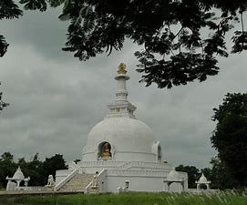

Vaishali,Vesali or Vaiśālī was a city in present-day Bihar, India, and is now an archaeological site. It is a part of the Tirhut Division. It was the capital city of the Vajjian Confederacy of Vrijji mahajanapada, considered one of the first examples of a republic around the 6th century BCE. Gautama Buddhapreached his last sermon before his death in c. 483 BCE
